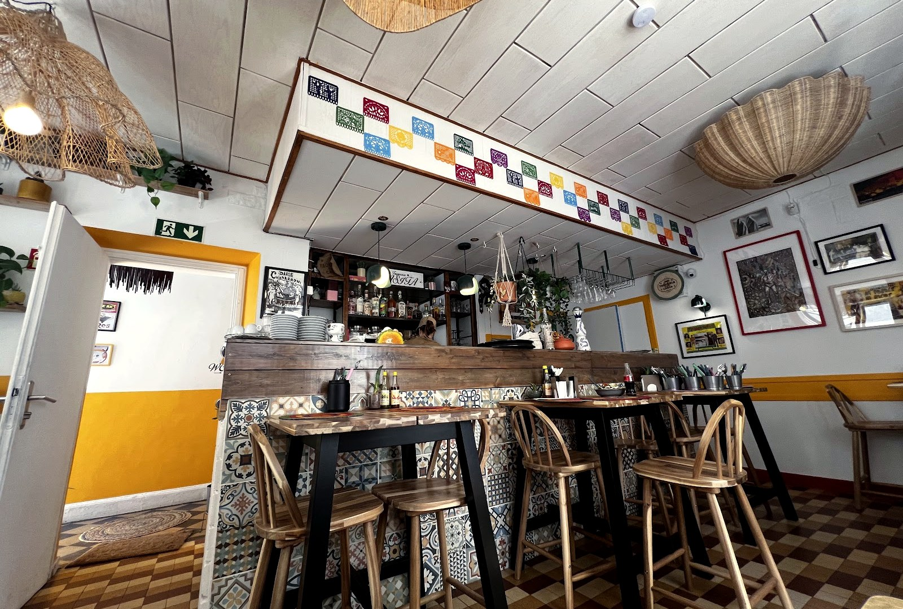
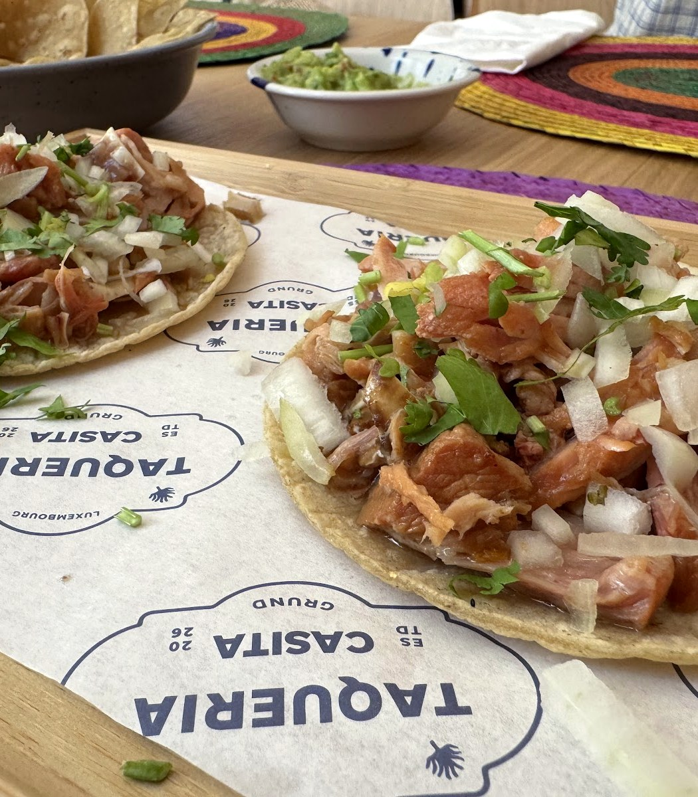
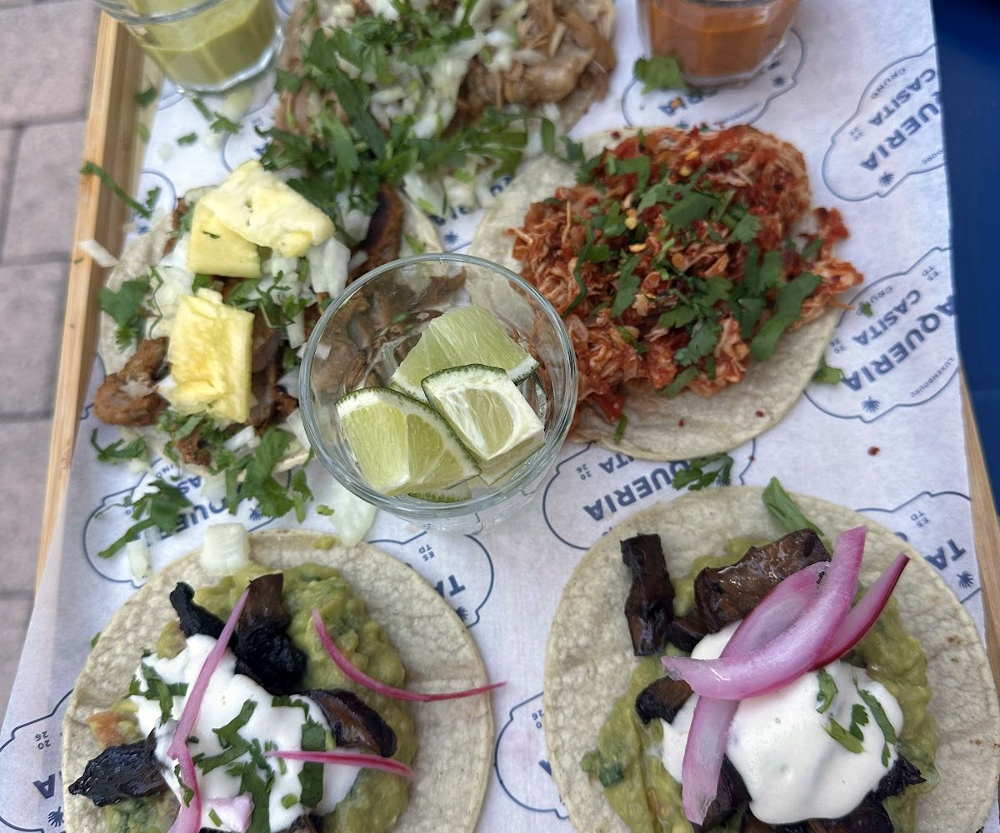
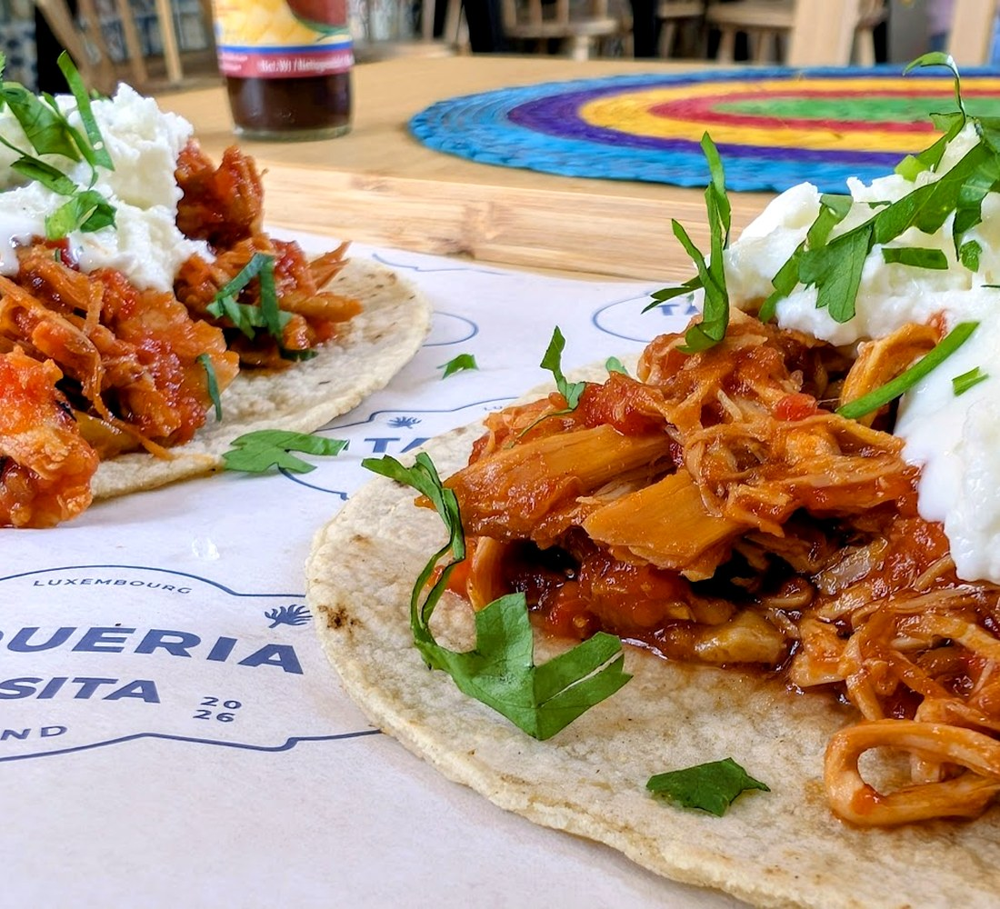
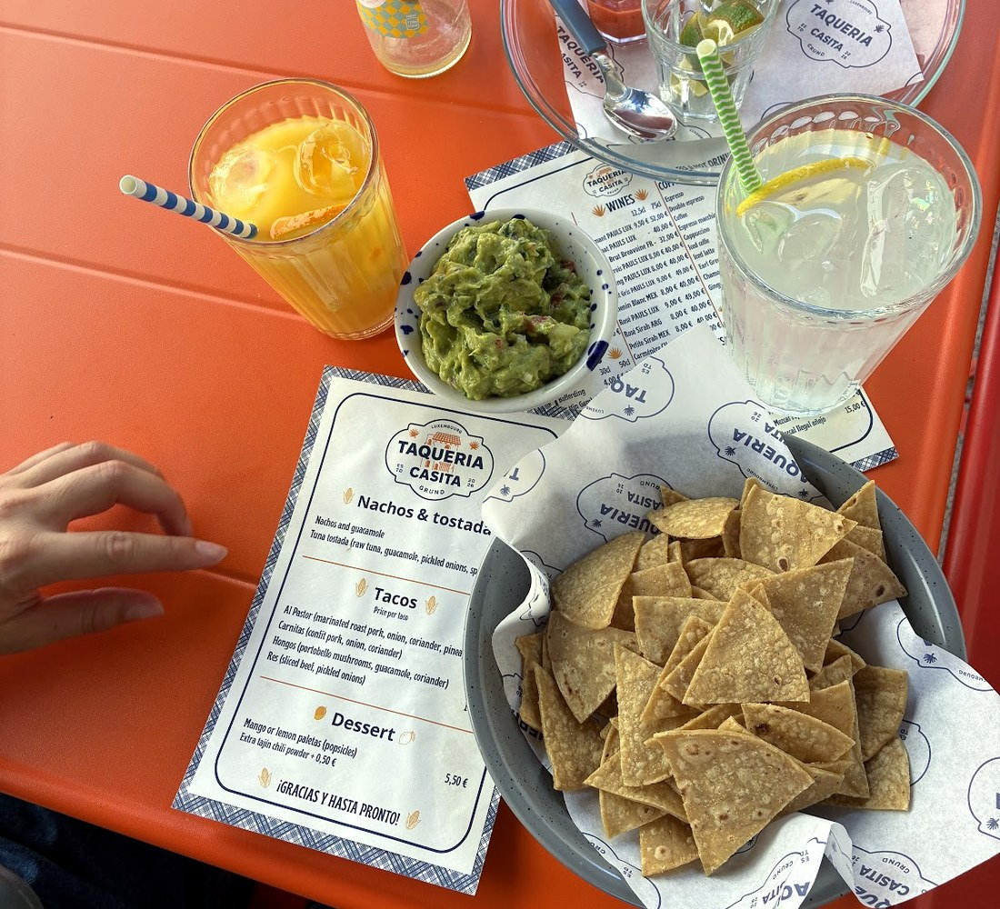
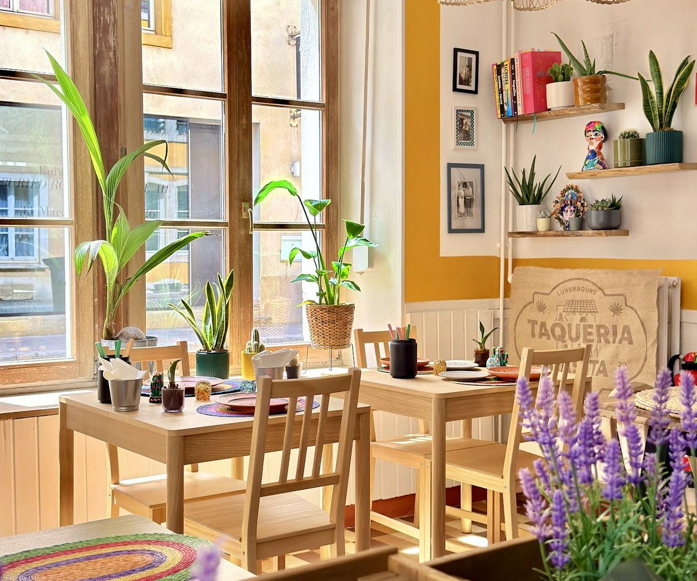
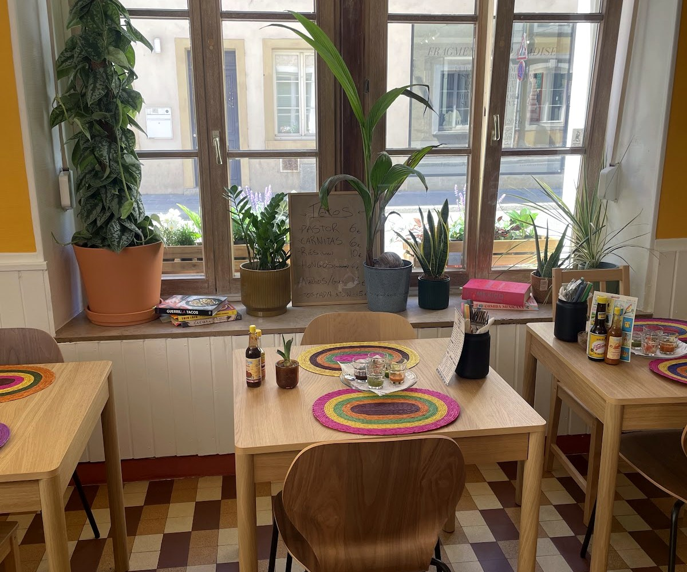
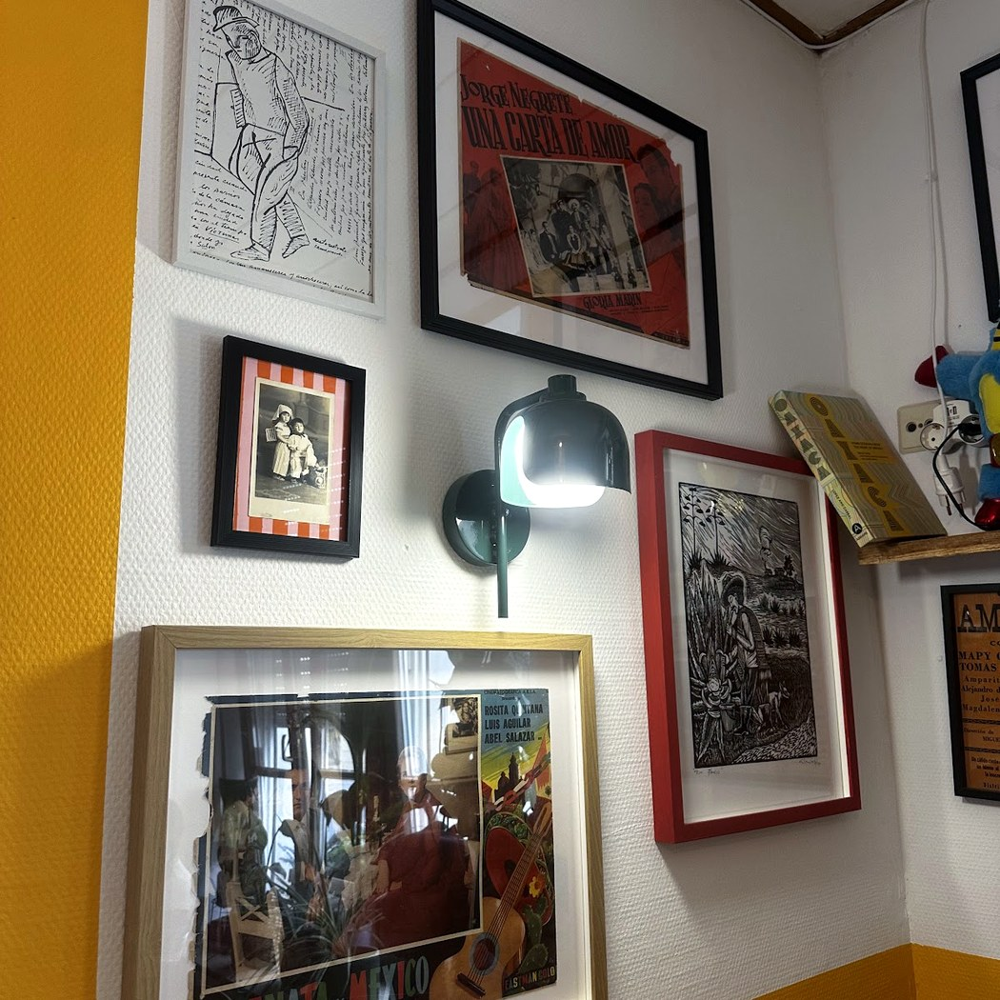

TaqueriaCasita
La petite maison mexicaine, cachée dans le Grund. Tortillas de maïs pressées à la main, vraies salsas, une paleta pour finir.
Les tacos,al pastor.
Porc mariné rôti, oignon, coriandre et une pointe d'ananas — sur une tortilla de maïs pressée à la minute.
Al pastor, carnitas, tinga de poulet, champignons, bœuf : chaque taco est garni à la commande, avec les salsas maison servies à côté. C'est petit, c'est vrai, c'est mexicain — comme dans une casita.

Tortilla de maïsLa table mexicaine
Tacos, tostadas, guacamole et chips, et des margaritas — servis sur les sets de la maison, dans une salle qui déborde de couleurs.






Ce qu'on sert
Une carte courte et vraie, reprise de sa propre carte. Tortillas de maïs, salsas maison, paletas pour finir.
Los tacos
le taco
Nachos & tostada
Postres & bar
Carte et prix relevés sur la carte de la maison (à titre indicatif). Les boissons et le supplément tajín sont à confirmer sur place.
Une petite maisonmexicaine.
« Casita », c'est la petite maison. Ouverte en 2026, nichée dans le Grund au bord de l'eau : une salle minuscule, quelques tables en terrasse, et toute la chaleur d'une vraie taqueria mexicaine — les tortillas pressées à la main, les salsas dans le molcajete.
Nous trouver
L-2651 Luxembourg · Grund (code postal à confirmer)
Service du soir dès 18h · horaires à confirmer